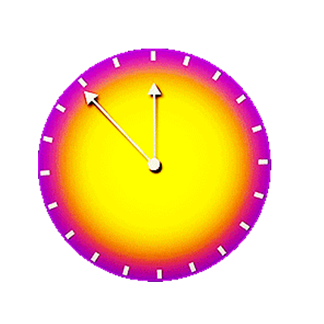
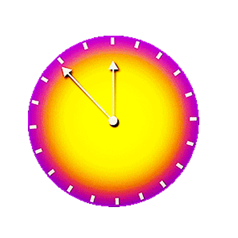

THREAT LEVEL MIDNIGHT. I remembered the episode from The Office so I wanted to make it into a clock! Its probably one of my favourite episodes. I think making the background was the hardest part.
I had some trouble with Michael Scott (the guy on the clock) as the colors kept inversing, so I put the black & white image I was using into photoshop and fixed some of the edges and changed the colors from black to white. After that I put a 4 in diameter circle on the CorelDraw file in order to not cut into the middle part of the record. I copied a black & white city from google images, editing some windows out, then added the text
For the sticker I simply took the clock image off of the episode poster and then followed the instructions online to make it into an EPS sticker.
Record Files Sticker clock Files 
